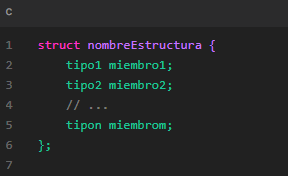

ESTRUCTURAS
Las estructuras en el lenguaje de programación C son un mecanismo que permite agrupar varias variables relacionadas en un solo bloque de código. Estas variables, también conocidas como miembros de la estructura, pueden tener diferentes tipos de datos, como enteros, caracteres, flotantes, punteros, entre otros.
Las estructuras son especialmente útiles cuando se desea representar un conjunto de datos relacionados y se necesita organizarlos de manera coherente. Por ejemplo, si se quiere almacenar información sobre un empleado, se pueden utilizar miembros de estructura para representar su nombre, número de identificación, salario, departamento, entre otros datos.
Al definir una estructura, se utiliza la palabra clave "struct" seguida del nombre de la estructura y una lista de los miembros que la componen. Cada miembro se declara con su tipo de dato correspondiente. Una vez que se ha definido la estructura, se pueden declarar variables de ese tipo y utilizarlas para almacenar y manipular los datos.
Una característica importante de las estructuras en C es la posibilidad de anidarlas. Esto significa que es posible tener una estructura dentro de otra estructura, lo que permite representar de manera más compleja y organizada conjuntos de datos.
Además, es posible asignar valores a los miembros de una estructura utilizando el operador de asignación "=" o mediante el uso de funciones que interactúen con la estructura. Esto facilita el acceso y la manipulación de los datos contenidos en la estructura.
En resumen, las estructuras en C son una herramienta poderosa para organizar y manipular conjuntos de datos relacionados. Permiten agrupar variables de diferentes tipos en un solo bloque de código, lo que facilita su manejo y acceso. Las estructuras son ampliamente utilizadas en programación para representar registros, objetos y otros conjuntos de datos complejos.
SINTAXYS
